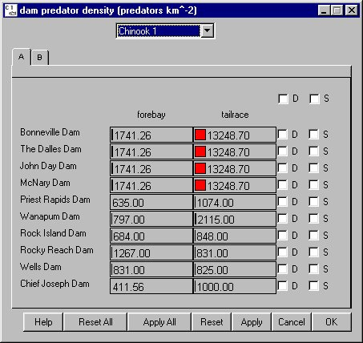

Predator Density
Selecting Dam Predator Density opens a window for setting predator densities by species in the forebay and tailrace at each dam (reaches are set in ReservoirReach Predator Density). Predator numbers are expressed on a square kilometer basis. This function accounts for the increase in predator density at the dam relative to densities in the reservoirs. As forebay and tailrace depths change with pool elevations, the predator density can be specified to adjust according to the change in depth from full pool by turning on predator density / volume interaction in RunRuntime Settings.
Predator Density opens a window for setting predator densities by species in the forebay and tailrace at each dam (reaches are set in ReservoirReach Predator Density). Predator numbers are expressed on a square kilometer basis. This function accounts for the increase in predator density at the dam relative to densities in the reservoirs. As forebay and tailrace depths change with pool elevations, the predator density can be specified to adjust according to the change in depth from full pool by turning on predator density / volume interaction in RunRuntime Settings.
This is a Slider Input window. Click on the letter tabs to page through the list of dams. This slider input window groups forebay values separately from tailrace values.
This Slider Input window includes menus for selecting by Dam and by Species. You can group sliders by Dam (D) or Species (S).
- If you group sliders by Dam (D), you are modifying the value for the specified Species at all dams in the group.
- If you group sliders by Species (S), you are modifying the value at the specified Dam for all species.
- If you group slider by both Dam (D) and Species (S), you are modifying the value for all species at all dams in the group.

Dam Predator Density in forebay and tailrace